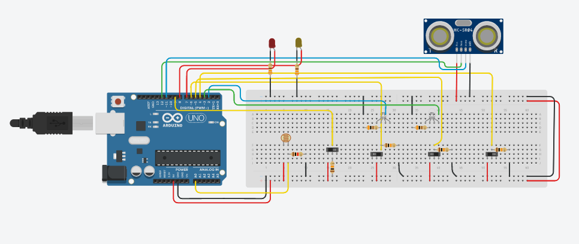
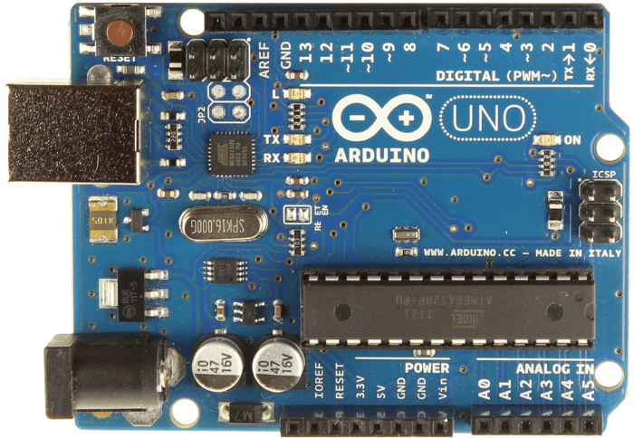
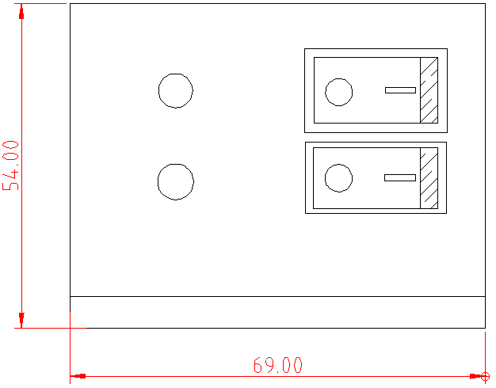
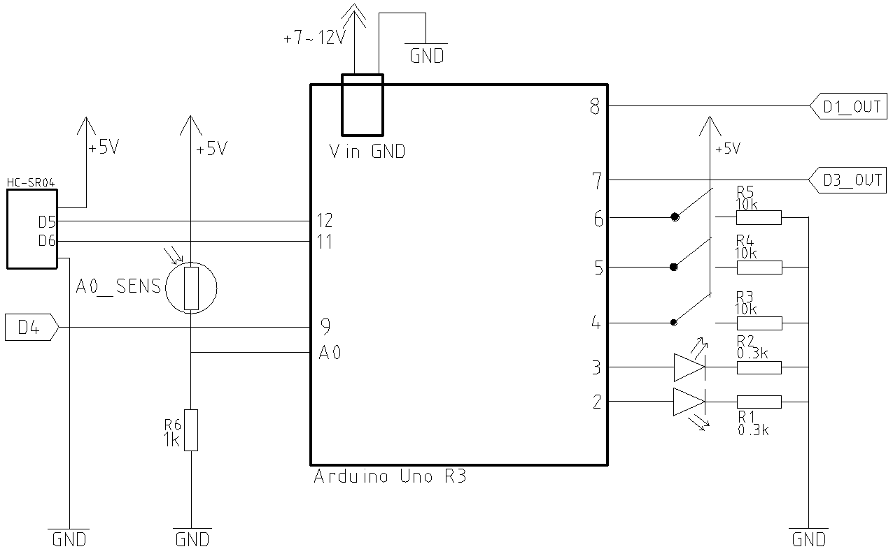

Farol Automatizado com Arduino
Esta é a pagina do projeto de simulação de um protótipo para a automação dos acionamentos dos faróis de um carro
desenvolvido para a disciplina de Introdução ao Projeto de Engenharia - EEE021 (2021) com o intuito de praticar a gestão
de projetos baseada na metodologia PMBOK.
O projeto foi desenvolvido pelos alunos:
- Luís Miki
- João Pedro Lima Pirajá
- André Muniz
- Filipe Boldini
- Igor Henrique
- Carlos Eduardo Araújo

A imagem acima é o resultado da parte de hardware do protótipo simulada na plataforma Tinkercad
de forma que, devido à impossibilidade de se trabalhar presencialmente e utilizar os espaços e recursos da universidade,
não foi prosseguido a implementação em um automóvel real.
O video a seguir mostra em detalhes as funcionalidades e aplicações do modelo:
Folha de Especifações do Protótipo
BSP4 FSE 2021 v0.1
1 Visão Geral
- 1 sinal de entrada analógica
- 5 sinais de entrada digital
- Auto-desligamento
- 2 saídas digitais

2 Especifações Técnicas
| Unidade | Valor | |
|---|---|---|
| Tensão de Alimentação | V | 7~12 |
| Dimensões | mm*mm*mm | 69*54*21 |
| Peso | g | 45 |
| nº de entradas | -- | 6 |
| Tensão de Operação | V | 0~5 |
| Intervalo de Temperatura | C | -20~60 |
3 Pinagem
| Pino | Sinal |
|---|---|
| 2 | D1_LED (Sinaleira do farol alto) |
| 3 | D2_LED (Sistema ativo/inativo) |
| 4 | D3_IN (Sinaleira do farol baixo) |
| 5 | D2_IN (Sistema ativo/inativo) |
| 6 | D1_IN (Sinaleira do farol alto) |
| 7 | D1_OUT (Farol Alto) |
| 8 | D3_OUT (Farol Baixo) |
| 9 | D4 (Relógio do carro) |
| 11 e 12 | D5 e D6 (Sensor de distância) |
| A0 | A0_SENS (Sensor de Luminosidade) |
4 Medidas

